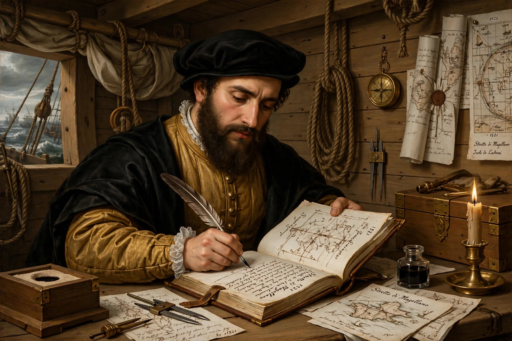

| Antonio Pigafetta | |
|---|---|
 | |
| Born | c. 1491, Vicenza, Republic of Venice |
| Died | c. 1534 (aged about 43) |
| Known for | Chronicle of the Magellan–Elcano expedition |
| Work | Relazione del primo viaggio intorno al mondo |
Antonio Pigafetta (c. 1491 – c. 1534) was an Italian scholar and explorer, a native of Vicenza, best known for the journal he kept as a participant in the Spanish expedition of Ferdinand Magellan — the first circumnavigation of the Earth (1519–1522). His account, the Relazione del primo viaggio intorno al mondo ("Report on the First Voyage Around the World"), is the single most important narrative source for the voyage.
Pigafetta, then attached to the service of the papal nuncio, volunteered for the expedition and was enrolled as a supernumerary (sobresaliente) on Magellan's flagship Trinidad. He kept a daily journal, befriended Magellan, and recorded geography, natural history, languages — his wordlists of Patagonian, Brazilian and Malay are among the earliest European records of those languages — and the peoples encountered, including the famous description of the "giants" of Patagonia. Wounded at the Battle of Mactan (27 April 1521), where Magellan was killed, Pigafetta survived the rest of the voyage and was one of the eighteen men who returned to Spain aboard the Victoria under Juan Sebastián Elcano in September 1522.
His account gave Europe its first detailed report of the Pacific crossing, the Philippines, the Moluccas and South American peoples; it also preserves the observation that the returning crew's carefully kept calendar was one day behind the date in Spain — the first documented encounter with the date-line effect. Pigafetta presented his journal to Charles V and later composed the Relazione (c. 1524–1525) for, among others, the Grand Master of the Knights of Rhodes, an order he had joined. The original manuscript is lost; the work survives in French and Italian versions, the most complete being the Italian manuscript held by the Biblioteca Ambrosiana in Milan. On his return he was granted a coat of arms bearing the motto Il n'est rose sans épine ("There is no rose without thorns").
See also: Circumnavigation · Tierra del Fuego · Ferdinand Magellan